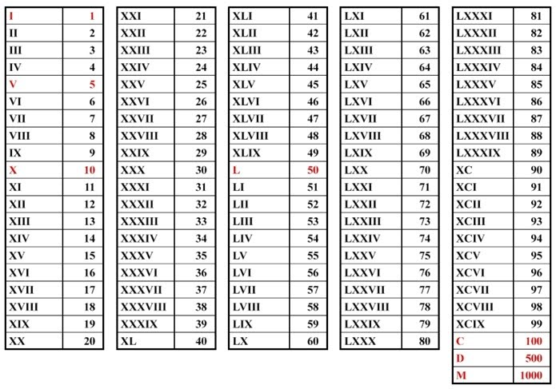

CONVERSOR DE NÚMEROS
Converter
Converter
Números Romanos
Nos algarismos romanos superiores a 3999, a conversão só ocorre se a unidade de milhar for substituída por "M". Por exemplo: MMMMCLV = 4155. Os algarismos romanos que não podem ser repetidos são V, L e D.
